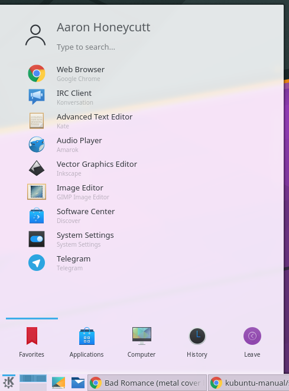
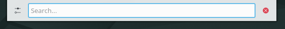

Basic
This section of the Documentation will cover the components available within Kubuntu to meet your desired functionality and make Kubuntu your own.
Launchers
KickOff
{kind=link}
As a KDE distribution, Kubuntu uses the Kickoff Application Launcher by default. The Kickoff Launcher can be compared with the ‘Start Menu’ in Windows (pre Windows 8). The icon to launch Kickoff is on the bottom left very much like Windows XP or 7. For more information on how to use and customize it, see Plasma Kickoff [https://userbase.kde.org/Special:MyLanguage/Plasma/Kickoff].
KRunner
Like Kickoff, KRunner is a launcher, but it does a lot more than just launching applications. Usually KRunner is accessed by pressing Alt + Space. For more information on what it can do, see Plasma Krunner [https://userbase.kde.org/Special:MyLanguage/Plasma/Krunner].
Networking

Wired
In most cases the wired network connection will simply work without any changes to the default Kubuntu configuration. Wired network connections are selected as default when they are available.
Wireless
Most Wireless cards are supported out of the box by Kubuntu. However, in some cases the Wireless network device may have a restricted driver in order to operate. The best way to check this is to open the ‘Driver Manager’. To open this program use ‘KickOff’ -> ‘System Settings’ -> ‘Driver Manager’. If the device needs a restricted driver, then ‘Driver Manager’ can help with selecting, installing, and activating the proper driver. Once this is all handled, the system will need to be rebooted. For more information on troubleshooting Wi-Fi on your system, see Wireless troubleshooting [https://help.ubuntu.com/community/WifiDocs/WirelessTroubleShootingGuide].
Deskop Customization
This section covers the basics of configuring Kubuntu to suit your needs. One of the strengths of the KDE philosophy is the focus on control of just about every aspect of the desktop environment. Wallpapers, themes, widgets, color schemes, splash screens, and more; the options for customization are endless.
KDE-Look is the number one location to find customized settings for the KDE Plasma desktop. Some of the applications even allow direct connections to KDE-Look to download a new configuration or image.
Themes
Kubuntu allows themes to be changed easily. To change your theme go to System Settings -> Workspace Theme in the Desktop Theme section, then choose from the list of installed themes. You can change the theme of the Desktop Theme, Cursor Theme, and the Splash Screen. Pick from the default choices that are installed, or left-click the ‘Get New...’ button in each section for more choices.
Plasmoids
Plasmoids (also called Widgets) can be added by right-clicking the desktop and selecting Add Widgets..., which will bring up a list of Widgets. For more information, see Plasma Widgets [https://userbase.kde.org/Special:MyLanguage/Plasma#Widgets].
Panel
By right-clicking on the desktop once again, you can select Add Panel to get more panels. You can left-click the button on the far right side of the panel to alter the properties of the panel, like changing its height or width or adding Widgets, for example. For more information, see Plasma Panels [https://userbase.kde.org/Special:MyLanguage/Plasma#Panels].
Dolphin
Dolphin is the default file manager in Kubuntu and can be compared with Windows Explorer. Dolphin looks simple because of great design, while having many powerful features. For more information, see Dolphin [https://userbase.kde.org/Special:MyLanguage/Dolphin].
Updating
Kubuntu developers release feature and security updates for applications and packages within the Kubuntu system. When updates become available, Kubuntu will display a message in the System Tray. To update the system, open Muon Update Manager from either KickOff or Krunner and click the Install updates button. After installing some updates, it may be necessary to restart the computer. If so, Kubuntu will display a pop-up and an icon in the System Tray.